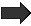

「パイプライン」は、従来の生産組み立てラインを模倣した一般的な並列パターンです。データは一連のパイプライン・フィルターを流れ、各フィルターではいくつかの方法でデータが処理されます。データの入力ストリームが与えられると、これらのフィルターのいくつかは並列に操作できるものがあります。例えば、ビデオ処理では、フレーム上のいくつかの操作はほかのフレームに依存しないため、複数のフレーム上で同時に操作できます。一方、前のフレームを最初に処理しなければならない操作もあります。
インテル® TBB の pipeline クラスと filter クラスは、パイプライン・パターンを実装します。単純なテキスト処理サンプルで、pipeline と filter を使用して並列処理を行う方法を説明します。サンプルは、テキストファイルを読み取り、テキストの 10 進数を 2 乗して、修正したテキストを新しいファイルに書き込みます。次にパイプラインの図を示します。
入力ファイルから |
 |
チャンクの数を |
出力ファイルに |
ファイル I/O はシーケンシャルであると仮定します。2 乗フィルターは並列に実行できます。つまり、n チャンクを非常に速くシリアルに読み取ることができれば、それらが適切な順で出力ファイルに書き込まれている限り、n チャンクをそれぞれ並列に処理できます。I/O はシーケンシャルであるため、入出力のフォーマットは中間のフィルターに移動して、並列にできます。
並列スケジュールのオーバーヘッドの影響を考慮して、フィルターは複数のテキストを処理します。各入力チャンクは約 4,000 文字です。各チャンクは、TextSlice クラスのインスタンスで表されています。
// テキストのスライスを保持
/** C++ 宣言はメモリーのはるかに大きなオブジェクトのヘッダーのみを表すため、
複数のメソッドをここで使用してインスタンスを割り当て/解放する必要がある*/
class TextSlice {
// シーケンスの最後の 1 つ後の文字へのポインター
char* logical_end;
// シーケンスの最後の 1 つ後のバイトへのポインター
char* physical_end;
public:
// max_size までの文字を保持できる TextSlice オブジェクトを割り当てる
static TextSlice* allocate( size_t max_size ) {
// null ターミネーター文字のためにスペースを +1 残す
TextSlice* t = (TextSlice*)tbb::tbb_allocator<char>().allocate( sizeof(TextSlice)+max_size+1 );
t->logical_end = t->begin();
t->physical_end = t->begin()+max_size;
return t;
}
// この TextSlice オブジェクトを解放する
void free() {
tbb::tbb_allocator<char>().deallocate((char*)this, sizeof(TextSlice)+(physical_end-begin())+1);
}
// シーケンスの最初へのポインター
char* begin() {return (char*)(this+1);}
// シーケンスの最後の 1 つ後の文字へのポインター
char* end() {return logical_end;}
// シーケンスの長さ
size_t size() const {return logical_end-(char*)(this+1);}
// シーケンスに追加できる最大文字数
size_t avail() const {return physical_end-logical_end;}
// このシーケンスにシーケンス [first,last) を追加
void append( char* first, char* last ) {
memcpy( logical_end, first, last-first );
logical_end += last-first;
}
// end() を指定された値に設定
void set_end( char* p ) {logical_end=p;}
};次のコードは、パイプラインを構築して実行するトップレベルのコードです。 TextSlice をコピーするオーバーヘッドを回避するため、TextSlice オブジェクトはポインターを使用してフィルター間で渡されます。
void RunPipeline( int ntoken, FILE* input_file, FILE* output_file ) {
tbb::parallel_pipeline(
ntoken,
tbb::make_filter<void,TextSlice*>(
tbb::filter::serial_in_order, MyInputFunc(input_file) )
&
tbb::make_filter<TextSlice*,TextSlice*>(
tbb::filter::parallel, MyTransformFunc() )
&
tbb::make_filter<TextSlice*,void>(
tbb::filter::serial_in_order, MyOutputFunc(output_file) ) );
} parallel_pipeline メソッドの ntoken 引数は、並列処理のレベルを制御します。 概念的には、トークンはパイプラインを流れます。シリアル・インオーダー・フィルターでは、各トークンはシリアルで順番に処理されます。並列フィルターでは、複数のトークンを並列に処理することができます。トークンの数に制限がない場合、出力フィルターの処理が追いつかないため、トークンを取得する中間フィルターで問題が発生することがあります。通常、この状況では、中間フィルターで不適切にリソースが消費されます。parallel_pipeline メソッドの引数は、処理できるトークンの最大数を指定します。いったんこの制限に達すると、別のトークンが出力フィルターで破棄されるまで、パイプラインは入力フィルターで新しいトークンを作成しません。
第 2 引数は、フィルターのシーケンスを指定します。各フィルターは、make_filter<inputType,outputType>(mode,functor) 関数で構築されます。
inputType は、フィルターの入力値の型を指定します。入力フィルターの型は void です。
outputType は、フィルターの出力値の型を指定します。出力フィルターの型は void です。
mode は、フィルターがアイテムを処理する方法 (並列、シリアル・インオーダー、アウトオブオーダー) を指定します。
functor は、入力値から出力値を生成する方法を指定します。
フィルターは operator& で連結されます。2 つのフィルターを連結する場合、最初のフィルターの outputType と 2 番目のフィルターの inputType が一致していなければなりません。
フィルターは事前に構築して連結できます。前のサンプルの等価バージョンを次に示します。
void RunPipeline( int ntoken, FILE* input_file, FILE* output_file ) {
tbb::filter_t<void,TextSlice*> f1( tbb::filter::serial_in_order,
MyInputFunc(input_file) );
tbb::filter_t<TextSlice*,TextSlice*> f2(tbb::filter::parallel,
MyTransformFunc() );
tbb::filter_t<TextSlice*,void> f3(tbb::filter::serial_in_order,
MyOutputFunc(output_file) );
tbb::filter_t<void,void> f = f1 & f2 & f3;
tbb::parallel_pipeline(ntoken,f);
}フィルターはシーケンシャル・ファイルからチャンクを読み、出力フィルターはチャンクを同じ順序で書かなければならないため、このサンプルの入力フィルターは serial_in_order でなければなりません。serial_in_order フィルターはすべて、アイテムを同じ順序で処理します。 そのため、アイテムが MyOutputFunc に MyInputFunc と異なる順序で到達した場合、パイプラインはその前のアイテムが処理されるまで、MyOutputFunc::operator() の呼び出しを自動的に遅延します。順序を保存しない、別の種類のシリアルフィルター serial_out_of_order もあります。
中間フィルターは純粋にローカルデータを処理するため、この構文の任意の数の呼び出しは同時に実行できます。したがって、このフィルターは並列フィルターとして指定されます。
では、各フィルターの構文について詳細に説明します。出力構文は最も単純です。この構文で行う処理は、TextSlice をファイルに書くことと TextSlice を解放することだけです。
// TextSlice をファイルに書き込む構文
class MyOutputFunc {
FILE* my_output_file;
public:
MyOutputFunc( FILE* output_file );
void operator()( TextSlice* item ) const;
};
MyOutputFunc::MyOutputFunc( FILE* output_file ) :
my_output_file(output_file)
{
}
void MyOutputFunc::operator()( TextSlice* out ) const {
size_t n = fwrite( out->begin(), 1, out->size(), my_output_file );
if( n!=out->size() ) {
fprintf(stderr,"Can't write into file '%s'\n", OutputFileName);
exit(1);
}
out->free();
} operator() メソッドは TextSlice を処理します。out 引数は、処理される TextSlice を指します。この構文はパイプラインの最後のフィルターに使用されるため、void を返します。
中間フィルターの構文は似ていますが、少し複雑です。この構文は、生成する TextSlice のポインターを返します。
// 10 進数を 2 乗に変更する構文
class MyTransformFunc {
public:
TextSlice* operator()( TextSlice* input ) const;
};
TextSlice* MyTransformFunc::operator()( TextSlice* input ) const {
// 数が入力の最後の場合でも strtol が正しく動作するように null ターミネーターを追加
*input->end() = '\0';
char* p = input->begin();
TextSlice* out = TextSlice::allocate( 2*MAX_CHAR_PER_INPUT_SLICE );
char* q = out->begin();
for(;;) {
while( p<input->end() && !isdigit(*p) )
*q++ = *p++;
if( p==input->end() )
break;
long x = strtol( p, &p, 10 );
// 注: ここでは入力文字列長の 2 倍の長さが用意されていて、
// 負でない整数 n の 2 乗の桁は n の 2 倍以上にならないため、
// オーバーフローをチェックする必要はない
long y = x*x;
sprintf(q,"%ld",y);
q = strchr(q,0);
}
out->set_end(q);
input->free();
return out;
} 数が境界を超えていないことを保証しなければならないため、入力構文は最も複雑です。数が境界を越えて次のスライスにも含まれる場合、不完全な数を次のスライスにコピーします。 また、入力の最後にいつ到達するかを示す必要もあります。このために、stop() メソッドを型 flow_control の特別な引数で呼び出します。この慣用句は、パイプラインの最初のフィルターに使用する構文に必要です。次のコードで太字で示されている部分です。
TextSlice* next_slice = NULL;
class MyInputFunc {
public:
MyInputFunc( FILE* input_file_ );
MyInputFunc( const MyInputFunc& f ) : input_file(f.input_file) { }
~MyInputFunc();
TextSlice* operator()( tbb::flow_control& fc ) const;
private:
FILE* input_file;
};
MyInputFunc::MyInputFunc( FILE* input_file_ ) :
input_file(input_file_) { }
MyInputFunc::~MyInputFunc() {
}
TextSlice* MyInputFunc::operator()( tbb::flow_control& fc ) const {
// 次のスライスで利用可能なスペースに文字を読む
if( !next_slice )
next_slice = TextSlice::allocate( MAX_CHAR_PER_INPUT_SLICE );
size_t m = next_slice->avail();
size_t n = fread( next_slice->end(), 1, m, input_file );
if( !n && next_slice->size()==0 ) {
// これ以上処理する文字はない
fc.stop();
return NULL;
} else {
// まだ処理する文字がある
TextSlice* t = next_slice;
next_slice = TextSlice::allocate( MAX_CHAR_PER_INPUT_SLICE );
char* p = t->end()+n;
if( n==m ) {
// 不完全な数を読む可能性がある
// その場合は不完全な数の文字数を次のスライスに転送
while( p>t->begin() && isdigit(p[-1]) )
--p;
assert(p>t->begin(),"Number too large to fit in buffer.\n");
next_slice->append( p, t->end()+n );
}
t->set_end(p);
return t;
}
}構文は filter_t が構築されたときと、パイプラインを実行したときにコピーされるため、コピー・コンストラクターは必ず定義する必要があります。
parallel_pipeline は、インテル® TBB 3.0 で追加された新しい構文です。examples/pipeline/square ディレクトリーには、フィルターが継承で定義される古い低レベルの構文を使用した 2 乗サンプルの完全なコードが含まれています。両方の構文の説明は、『デベロッパー・リファレンス』を参照してください。